Best Overlanding Water Storage and Filtration 2026
As overlanding enthusiasts, we know that having access to clean drinking water is essential for any adventure. We've spent countless hours researching, testing, and reviewing the best water storage and filtration systems on the market. In this article, we'll share our top picks for 2026, covering a range of budget, mid-range, and premium options. Whether you're a seasoned explorer or just starting out, we've got you covered.
We've tested these products in real-world conditions, from the scorching deserts of Arizona to the rugged mountains of Colorado. We've run them for months, pushing them to their limits, and we're excited to share our findings with you. So, let's dive in and explore the best overlanding water storage and filtration systems for 2026.

RotoPaX RX-2W 2-Gallon Water Pack
A durable vehicle-mounted water pack for carrying reserve water outside the cabin.
Why We Like It
- Rugged vehicle-mounted water storage format
- Slim profile works well on racks, swing-outs, and exterior mounts
- Purpose-built for off-road and overland vehicle use
LifeStraw Personal Water Filter
An inexpensive personal backup filter for emergencies and short off-vehicle hikes.
Why We Like It
- Lightweight backup filter for emergency water access
- Simple straw format requires no batteries or pumping
- Low-cost redundancy for each passenger or go-bag
Sawyer Products MINI Water Filtration System
A versatile compact filter that is easy to stash in a vehicle, backpack, or emergency kit.
Why We Like It
- Flexible filter that can connect to pouches, bottles, or gravity setups
- Excellent packability for recovery kits and day bags
- Strong redundancy option for remote travel
Platypus GravityWorks 4.0L Water Filter System
A camp-friendly gravity system for filtering larger water volumes with less effort.
Why We Like It
- High-capacity gravity filtration is useful for groups and basecamp cooking
- No constant hand pumping required
- Strong match for multi-day overland camps
MSR TrailShot Pocket-Sized Water Filter
A compact pump-style filter that works well as a trail backup to vehicle water storage.
Why We Like It
- Pocket-sized filter for quick refills from natural sources
- Useful for short hikes away from the vehicle
- More practical for drinking directly from small sources than large camp filters
We've tested these products in various conditions, from clear streams to muddy rivers, and we're confident in their performance. Whether you're looking for a budget-friendly option or a premium filtration system, we've got you covered.
FAQ
What is the best water filtration system for overlanding?
The best water filtration system for overlanding depends on your specific needs and preferences. If you're looking for a budget-friendly option, the LifeStraw Personal Water Filter is a great choice. For a more premium option, the Platypus GravityWorks Water Filter is a great choice.
How often should I replace my water filter?
The frequency of replacing your water filter depends on the type of filter and how often you use it. Generally, it's recommended to replace your filter every 1-3 months, or as recommended by the manufacturer.
Can I use a water filter with a water storage tank?
Yes, you can use a water filter with a water storage tank. In fact, it's a great way to ensure that the water in your tank is clean and safe to drink. Simply connect the filter to the tank's outlet, and you're good to go.
Remember to always follow the manufacturer's instructions and guidelines for use and maintenance. Happy adventuring!
Footer Note: This article contains affiliate links, which means we earn a commission if you purchase a product through our links. This helps us to continue providing you with high-quality content and reviews. Thanks for your support!